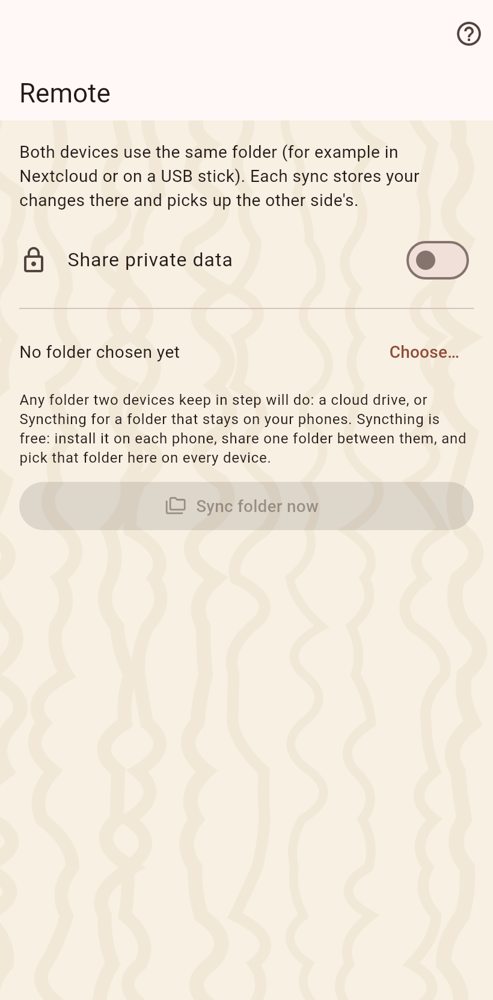

For devices that never meet: pick one folder once, on every device, on a cloud client or a USB stick. Each sync writes your changes there and reads the others'.

Choose the folder; on Android the phone grants it once through the picker. One folder carries all catalogs, each in a subfolder of its own. A change reaches the folder within seconds while the app is on screen, and the folder is looked at every thirty seconds.
A line at the top of every page says whose changes wait in the folder; a tap syncs. A second switch merges them on their own and reports in a note. The folder out of reach raises one note that stays until dismissed.
Your entries and your photos, stripped of camera location. Private values only with the private switch on. A partner still on an older app is named until it updates.